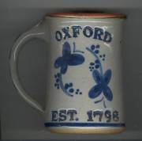

Oxford Past
Oxford, New Haven, Connecticut
Home
Cemeteries
Genealogy
Library
Email
Oxford Related
Projects

Oxford Bicentennial Slide Show
by
DeBisschop,
Dorothy A.
CANDEE
Candee Generations at Jack's Hill Cemetery
- Karen Bauer
Five generations of the Candee family buried at Jack's Hill Cemetery.
CHATFIELD
Cherry's Page
- Cheryl (Chatfield) Thompson
Photographs, transcriptions of letters and newspaper clippings and more.
TREAT
Treat-DeBisschop Homestead
- Dorothy A. DeBisschop
Photographs, transcriptions of diaries and more.
WHEELER
Wheeler - Osborn Place, Riggs Street
- Karen Bauer Bryant
Built by Samuel Wheeler in 1772, the house stood for over 200 years.
Home
Cemeteries
Genealogy
Library
Email